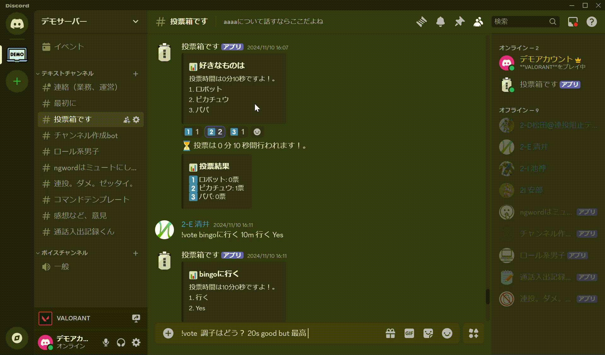
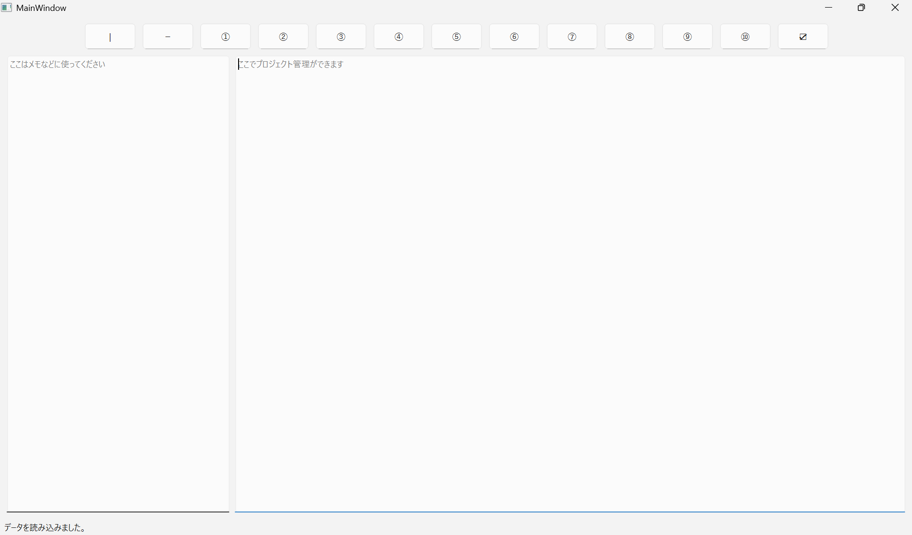
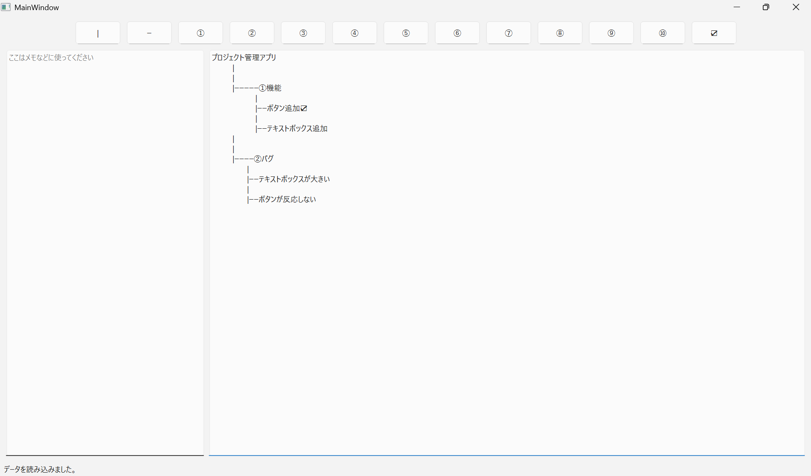
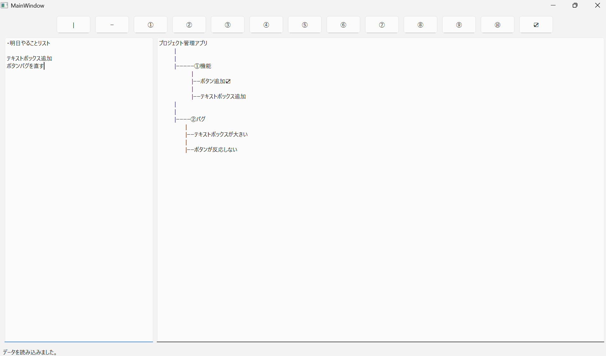

-
ドラクエっぽいターン制RPGバトル

ドラクエを参考にしたターン制RPGのバトルを作りました。
授業でのpythonを使った自由課題の時に制作しました。
初めての成果物ですが自分の納得のいくまで作りこみました。
まだモジュールなどを使っていないので文字だけです。＞＜
以下はgithubのリポジトリのリンクです。
https://github.com/kotua510/DQlike-buttlegame
-
Discord.botとそれを共有できるWebサイト

二年生の時の高専祭(文化祭)の制作物です。
discord.botというdiscordの拡張機能を用いて
discordの機能の拡張と、そのbotを投稿したり
ダウンロードすることができるwebサイトを製作しました。
いつでも使用できるようにflaskサーバーなどを利用しました。
私はbotの作成、高専祭の際体験してもらう
discordサーバーを作成しました。
以下はgithubのリポジトリのリンクです。
(担当したdiscord.botのみ)
https://github.com/kotua510/discord.bot
-
マインスイーパー＆バトル

マインスイーパーとターン制バトルを組み合わせた
ゲームを作ってみました。
制作期間は2024年 12月から 2025年 1月です。
今までは既存のターン制バトルを真似たものを作ってきましたが
今回はオリジナルっぽいものを作ってみたかったので
マインスイーパーとターン制バトルを
掛け合わせたものを作りました。
こういった何かと何かを掛け合わせてゲームを作る経験は
初めてだったので戸惑いましたが、マインスイーパーの結果を
バトルの攻撃力や防御力に反映したり、バトルで使用したら
マインスイーパーが有利になる道具を実装することによって
上手く二つの要素を掛け合わせることができたと思います。
もしプレイされる際はリポジトリに説明書があるので
それを読んでからプレイしてください。
以下はgithubのリポジトリのURLです。
https://github.com/kotua510/minesweeper-battle
-
プロジェクト管理アプリ



学校の課題や自主制作などで使える
プロジェクト管理アプリを作りました。
制作期間は2025年 2月で、12時間ほどかけて制作しました。
制作した理由はいままで自分が何かを制作するときに
使っていたメモ帳アプリで不便だと感じていた部分を
解消しようと思い、今回のアプリを製作しました。
具体的にはカテゴリーごとの管理が従来のアプリでは
やりにくいと感じていました。
例えば、 機能の追加では○○をする、
バグの修正では△△をしたい、
というときに従来のアプリではスペースで区切ったり、
文字の大きさを変えて箇条書きにするしかなかったと
思うのですが、今回私が制作したアプリでは上の画像の通り、
「|」や「―」のような図形で表すことにより、
視覚的にわかりやすくすることができたと思います。
また、「☑」を使うことによってその作業が
終わっているかどうかを表すこともできます。
使い方はリポジトリにあるので使う際はぜひご覧ください。
以下はgithubのリポジトリのURLです。
https://github.com/kotua510/project_management